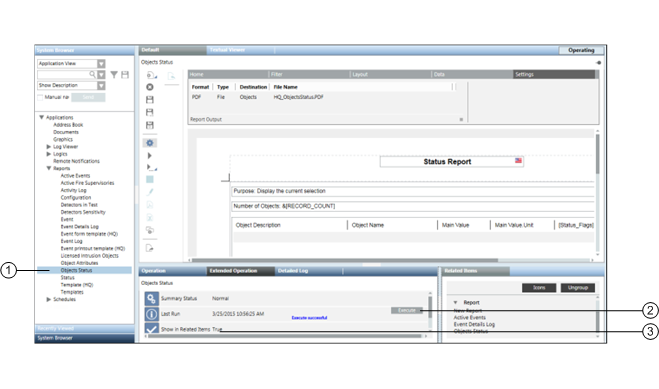

Contextual Pane – Extended Operation Tab
You can generate a selected report automatically by clicking Execute in the Extended Operations tab of the Contextual pane.

| Name | Description |
1 | Report Definition Selection | Location of Report Definitions and Report folders in the Application View of System Browser. |
2 | Automatic report execution | Runs a Report Definition in the background. |
3 | Report Definition Properties | Properties (Last Run, Summary Status, and Show in Related Items) displayed in the Extended Operations tab. |